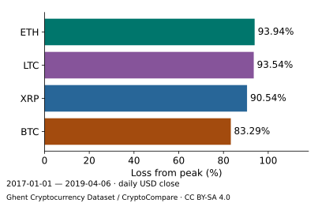
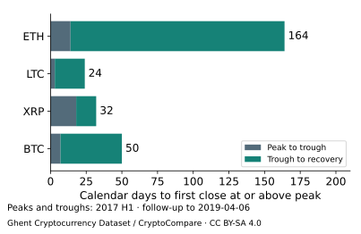
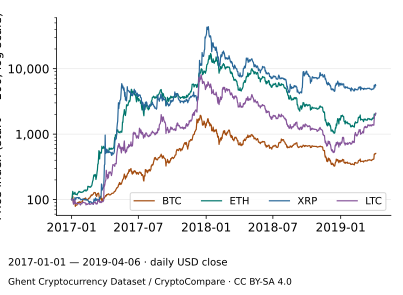
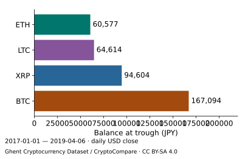

アルトコイン暴落史｜2017〜2019年のETH・LTC・XRP最大下落率と回復状況
第14号 執筆・更新 ｜ トピック基地の編集方針
2017年1月1日から2019年4月6日まで、米ドル建ての終値を毎日追うと、最大下落率はETHが93.94%、LTCが93.54%、XRPが90.54%、BTCが83.29%でした。各銘柄の高値で100万円相当を保有していたとすると、底で残るのは約6万〜17万円です。
調査期間の注意：本記事の「回復」「未回復」は2019年4月6日までの記録です。2019年4月7日以降や2026年現在の回復状況は本分析では検証していません。
この4つの高値には、いずれも観測最終日までに戻りませんでした。一方、2017年前半だけで最大だった下落からは、4銘柄とも元の高値に届いています。どの高値を起点にするかで「回復に何日かかったか」の答えが変わります。
1. 時価総額が大きくても、その値段で売れるとは限らない
流通量が1億枚、最後に取引された価格が100円なら、時価総額は100億円です。次の売買が80円で成立すれば、流通量が同じでも80億円になります。この差の20億円は、売り手が実際に引き出した金額を示しません。大量に売ったときに何円で約定するかは、買い注文の厚みと取引場所で変わります。
新規発行やロック解除で市場に出せる枚数が増えると、1枚の価格が下がっても時価総額が増えることがあります。資金が別の銘柄に移る局面では買い手も減り得ます。本稿の終値から、流通量の変化や売り注文の内訳、特定日の下落原因までは特定できません。
2. 826日で最大だった下落を比べる
各日の終値を、それまでの期間内最高終値で割り、最も深く落ち込んだ組を採りました。スマートフォンでは表を横に動かして終値を確認できます。ここでの「高値」「底値」はすべて米ドル建ての日足終値です。上場来や日中の瞬間値を示す順位ではありません。
| 銘柄 | 高値日・終値（USD） | 底値日・終値（USD） | 高値から底まで | 下落率 |
|---|---|---|---|---|
| ETH | 2018-01-13 1385.02 | 2018-12-14 83.9 | 335日 | -93.94% |
| LTC | 2017-12-18 357.51 | 2018-12-13 23.1 | 360日 | -93.54% |
| XRP | 2018-01-07 2.78 | 2018-09-11 0.263 | 247日 | -90.54% |
| BTC | 2017-12-16 19345.49 | 2018-12-15 3232.51 | 364日 | -83.29% |

ETHとLTC。 下げ幅は近くても、高値を付けたのはLTCが2017年12月18日、ETHが翌年1月13日。底に届くまでの日数も360日と335日でした。どちらが先に動いたかは、下落率の棒だけでは読み取れません。
XRP。 2.78ドルから0.263ドルまで下げ、底は2018年9月11日。ほかの3銘柄が12月に底を付けるより早く、4銘柄共通の「暴落が終わった日」は設定できません。
3. 高値から何日待ったか。底から何日戻したか
回復日は底の後、初めて終値が元の高値以上になった日です。同値に戻った日も含めます。たとえば2017年前半のETHは高値から底まで14日、底から回復まで150日で、高値で保有していた人から見れば164日です。
| 銘柄 | 判定 | 高値から観測終了まで | 最終終値（USD） | 最終日の高値比 |
|---|---|---|---|---|
| ETH | 未回復 | 448日 | 166.28 | -87.99% |
| LTC | 未回復 | 474日 | 92.63 | -74.09% |
| XRP | 未回復 | 454日 | 0.354 | -87.27% |
| BTC | 未回復 | 476日 | 5057.25 | -73.86% |
表の日数は回復までの日数の下限です。そこで観測を打ち切ったため、その後の初回回復日や現在の状態はこのデータでは決まりません。
| 銘柄 | 高値日 → 底値日 | 下落率 | 初回回復日 | 高値から | 底から |
|---|---|---|---|---|---|
| ETH | 2017-06-12 → 2017-06-26 | -35.72% | 2017-11-23 | 164日 | 150日 |
| LTC | 2017-05-24 → 2017-05-27 | -34.40% | 2017-06-17 | 24日 | 21日 |
| XRP | 2017-04-02 → 2017-04-20 | -51.24% | 2017-05-04 | 32日 | 14日 |
| BTC | 2017-01-04 → 2017-01-11 | -30.82% | 2017-02-23 | 50日 | 43日 |

SOL・ADA・DOGEは判定不能。 今回取得した研究表には3銘柄の系列がありません。取引開始前の日を0ドルで埋めたり、同名の別商品の価格を足したりせず、順位・平均の対象から外しました。
4. BTCと同じ日に保有していたらどうか
上の順位は、銘柄別に起点と終点を探した結果です。全員がETHの高値日（2018年1月13日）に買い、ETHの底値日（12月14日）まで持ったと仮定すると、終値の変化率はETH −93.94%、LTC −90.94%、XRP −85.53%、BTC −77.28%です。購入日の違いを消して比べても、この事例ではBTCにも大幅な損失が残ります。

BTCは採掘報酬の発行予定を持ち、ETHとXRPにはそれぞれ異なる供給や手数料の仕組みがあります。この期間のBTCの下落幅が小さかった理由を、発行上限や流動性だけに帰すことはできません。出来高にもとづく市場の厚みを調べるには、各時点の板や注文額ごとの約定価格が必要です。
取引場所を変えた場合も確認しました。比較用BTC系列の高値・底値は19,345.49ドルと3,232.51ドル。同じ日のBitstamp終値は19,187.78ドルと3,179.54ドルで、こちらを使うと下落率は−83.43%です。異なる取引所・集計法の終値をつないで、見かけ上精密な回復日を作ることは避けました。Bitstamp系列の集計条件
5. 100万円が10万円に減ったら、元に戻るには何％必要か
90%下落した100万円は10万円です。ここから90%上昇しても19万円。100万円に届くには10倍、つまり底から900%の上昇が必要です。必要上昇率は（高値 ÷ 底値 − 1）× 100で求められます。
| 銘柄 | 底値時の評価額 | 底値から必要な上昇率 |
|---|---|---|
| ETH | 60,577円 | 1550.80% |
| LTC | 64,614円 | 1447.66% |
| XRP | 94,604円 | 957.03% |
| BTC | 167,094円 | 498.47% |

同じ数量を持ち続けた想定です。分割購入、途中売却、フォークで受け取った資産、ステーキング収益、保管先の破綻などは含みません。市場の終値が一度元に戻っても、各投資家が取得費と諸費用を回収できたかは別途計算が必要です。
6. 消えた市場、名前が変わった資産をどう数えるか
市場自体が終了する例があります。BNB Beacon Chainの板取引型DEXは、実装済みのBEP-151で新規注文と新規ペアの上場を停止しました。その市場で売買できなくなった後の空欄から、価格ゼロとも、最後の終値で売れたとも判断できません。BNB Chainの実装仕様
Terraの例では、Cosmosの台帳にある最小単位が同じ uluna でも、旧チェーン側の表示はLUNC、新チェーン側はLUNAです。名前や単位だけでチャートをつなぐと、保有していない別資産の上昇を「回復」と数えてしまいます。旧チェーンの登録情報 ／ 新チェーンの登録情報
研究データの作成者は、改称や収録不足を除外条件に挙げています。さらに今回は終値と出来高を4銘柄で毎日照合できる期間に限定しました。早く市場から消えた銘柄が入りにくいため、ここで観測した回復の件数を「アルトコイン全体が回復する確率」には換算できません。全取引所の上場廃止、4銘柄の全イベントの調整履歴は未確認です。
7. この結果を読むときに確かめる3点
- 購入日の問いには、全銘柄を同じ日付にそろえた比較を使う。銘柄固有の最悪局面を知る問いには最大下落率を使う。
- 「回復」の起点と期限を読む。2017年前半のXRPは約半値になって32日で高値に戻りましたが、全期間の最大下落は基準日までに戻っていません。
- 売れる場所と保有単位を確かめる。市場撤退・フォーク・移行の前後では、同じチャートを見ていても実際に売買できた条件が変わります。
8. 出典・計算条件・再現方法
原資料はゲント大学の研究チームによる Cryptocurrency Dataset。Wai Kit Tsang・Ekaterina LoginovaがGuus van Heijningenの修士研究を基に作成し、Dries Benoitが指導しました。原価格はCryptoCompareの histoday で指定通貨はUSD。取引所を指定しない取得コードの close を採用しました。構成取引所や換算経路の過去の内訳は未確認です。
取得・検算は2026年11月23日。研究表は2015年8月7日〜2019年4月7日を収録しています。初期の一部系列に出来高ゼロの日があるため比較は2017年の年初から。原取得時に最終足が確定していたか分からないため、末日は4月6日としました。日付はUTCの日足の開始日です。各銘柄875行のうち、価格と両方の出来高が一致する重複49行を除き、826日すべてに正の観測値がありました。欠損補間は行っていません。
XRPの2017年4月2日の終値は前日比約2.80倍です。自動的に削除せず、提示した研究表の観測として採用しました。元取引の全件照合はできていません。当時の各プロトコルの2版で通貨の最小単位も確認しました。BTCとLTCは1枚が10の8乗単位、ETHは10の18乗wei、XRPは10の6乗dropsです（版と出典は再現手順に掲載）。集計系列には名称・分割調整のフラグがなく、別チェーンへの換算や取得原価の調整は加えていません。
下落率は（底値終値 ÷ 先行高値終値 − 1）× 100。回復判定には丸める前の終値を使います。同じ高さ・同じ深さなら先の日を採用。再計算はCSVと analyze.py を同じ場所に保存し、Python 3で python analyze.py を実行してください。
原データのライセンスは CC BY-SA 4.0。トピック基地が上記期間を抽出し、重複を除き、表・グラフを作成しました。加工CSV・集計表・図も同じ条件で利用できます。